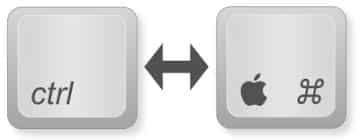
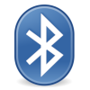
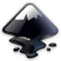

COMPUTADORA
La Computadora de Casa Lipari es una Macintosh, el uso es casi idéntico a una computadora Windows, sin embargo hay ciertas distinciones que hay que hacer notar.
Teclado

Una de las principales distinciones entre Windows y Mac es el uso del botón Control; en Windows el botón Control se usa para ejecutar la mayoría de los comandos comunes, como copiar (Control + "C"), pegar (Control + "V"), etc. En Mac la tecla Control es sustituida por la tecla "CMD".
Igualmente, escribir arroba (@), es usando las teclas Alt (⎇) y el numero 2
Mouse
El Magic Mouse de apple es un ratón con superficie Multi-Touch que permite hacer gestos sencillos, deslizar un dedo por enmedio del ratón sirve para desplazar la pagina, y dar click del lado derecho en el ratón es como si fuera un botón secundario.
Control de Juegos
El control de juegos interactua directamente y es automaticamente detectado por todos los juegos instalados en el programa Steam, ademas, el control tambien puede ser usado como mouse en la computadora, el siquiente diagrama muestra como se usa el control.

Software
La computadora esta lista para ser usada para trabajo y entretenimiento.
Es una maquina de bajo consumo de energía y perfil minimalista, por lo tanto no esta hecha para trabajo pesado, sin embargo puede ser utilizada para trabajar y jugar sin problemas.
Finder
Finder es la aplicación del sistema operativo macOS responsable de la gestión total de los archivos de usuario, discos, red y el lanzamiento de otras aplicaciones.

Navegadores
Safari, Google Chrome y Mozilla Firefox son los Navegadores de Internet mas populares.
Safari es, por default, el Navegador Principal.

Steam
Steam es una plataforma digital de Videojuegos. La maquina tiene algunos juegos simples instalados para que pueda jugar, le recordamos que esta no es una maquina poderosa de juegos, pero es capaz de ejecutar sin problemas los juegos que tiene instalados.

Apple Music
Apple Music es el servicio de Streaming de Música de Apple, cuenta con mas de 70 millones de canciones, estaciones de radio y conciertos en vivo. Todas las transmisiones de Apple Music se hacen en formato de alta calidad (Lossless 24-bit/44.1 kHz ALAC).

VLC
VLC es reproductor multimedia multiplataforma de código abierto y libre que reproduce la mayoría de archivos multimedia, así como DVD, Audio CD, VCD y diversos protocolos de transmisión.
Bluetooth
Intercambio de archivos de Bluetooth es una utilidad incluida en el sistema operativo Mac OS X, usada para el intercambio de ficheros entre dispositivos con Bluetooth. Por ejemplo, puede ser usado para enviar imágenes a un teléfono móvil o para recibir un documento desde una PDA.

Captura de Pantalla
Captura de Pantalla permite hacer fotos (denominadas capturas de pantalla) o grabaciones de la pantalla de la Computadora, tambien proporciona un panel de herramientas que te permiten realizar capturas y grabaciones en la pantalla, y dispone de opciones para controlar lo que se captura (por ejemplo, puedes ajustar un cronómetro o incluir el puntero o los clics que hagas).

Captura de Imagen
La aplicación Captura de Imagen es capaz de reconocer cámaras digitales y tarjetas de memoria, mostrándonos en una lista o un mosaico todas las imágenes y dándonos la opción de importarlas o eliminarlas del dispositivo cómodamente y también funciona con vídeos.

Diccionario
Diccionario es una poderosa aplicacion de diccionario que tiene fuentes como; Diccionario General de la Lengua Española Vox, Gran Diccionario Oxford - Español-Inglés • Inglés-Español, Diccionario de Apple y Wikipedia

Vista Previa
Vista Previa de Mac OS es una aplicación que se utiliza para una visualización sencilla de una amplia gama de formatos de archivo. También, puede editar archivos PDF con esta aplicación.

Mapas
Apple Maps es una aplicación nativa de Mac y actúa como un simple navegador personal para poder guiarte a una dirección establecida. Similar a Google Maps

Github Desktop
GitHub Desktop es una aplicación que te habilita para interactuar con GitHub utilizando una GUI en vez de la línea de comandos o de un navegador web. GitHub Desktop fomenta que tú y tu equipo colaboren utilizando las mejoras prácticas con Git y GitHub.
Atom
Atom es un editor de texto muy completo especializado en programación. Entre sus muchas funciones destaca la posibilidad de instalar temas que cambian su aspecto y plugins que añaden nuevas características.

VSCode
Visual Studio Code es otro editor de texto para programadores muy popular.
LibreOffice
LibreOffice es una poderosa suite de oficina, compatible y técnicamente identico a Office en Windows. LibreOffice incorpora varias aplicaciones: Writer, el procesador de textos, Calc, la hoja de cálculos, Impress, el editor de presentaciones, Draw, nuestra aplicación de dibujo y diagramas de flujo, Base, nuestra base de datos e interfaz con otras bases de datos, y Math para la edición de fórmulas matemática.
TextEdit
TextEdit es una pequeña pero poderosa aplicacion de procesamiento de textos, maneja los formatos de texto simple (txt) y texto enriquecido (rtf). cuenta con un corrector ortografico nativo, permite el uso de tablas, imagenes, y reconoce lenguajes simples de programacion.

Gimp
GIMP (GNU Image Manipulation Program) es un programa de edición de imágenes digitales en forma de mapa de bits, tanto dibujos como fotografías. Gimp Es un Software Libre, Gratuito y forma parte del proyecto GNU, está disponible bajo la Licencia pública general de GNU.
Inkscape
Inkscape es un editor libre y gratuito de gráficos vectoriales con características profesionales y multiplataforma

Dropbox
Dropbox es un servicio de alojamiento de archivos que permite a los usuarios almacenar y sincronizar ficheros en línea entre ordenadores, así como compartir archivos y carpetas con otros usuarios. También es posible en tabletas y móviles

Rectangle
Rectangle es una pequeña aplicación que se usa para mover y cambiar el tamaño de las ventanas, puede ser usado en desde el menu superior derecho de la pantalla, con combinaciones de teclas o arrastrando las ventanas a las zonas establecidas para cambiar el tamaño. Esta aplicacion se encuentra en la barra superior de la pantalla del lado derecho, junto a la hora.

RustDesk
RustDesk es una aplicacion de control remoto para computadoras, permite controlar una computadora desde otra o un telefono, ya sea en la red local o a traves de internet. para controlar la computadora solo se necesita el id y password que se muestran al abrir la aplicacion. Por razones de seguridad y privacidad nosotros no tenemos acceso a la computadora, para darnos acceso necesita darnos el ID de la maquina y la contraseña generada al azar que se muestra en la aplicacion. Esta aplicacion se encuentra en la barra superior de la pantalla del lado derecho, junto a la hora.
El disco duro de la computadora es borrado cuando se entrega el departamento para garantizar su privacidad, sin embargo todo archivo e información que no sea respaldado ya no podrá ser recuperado.